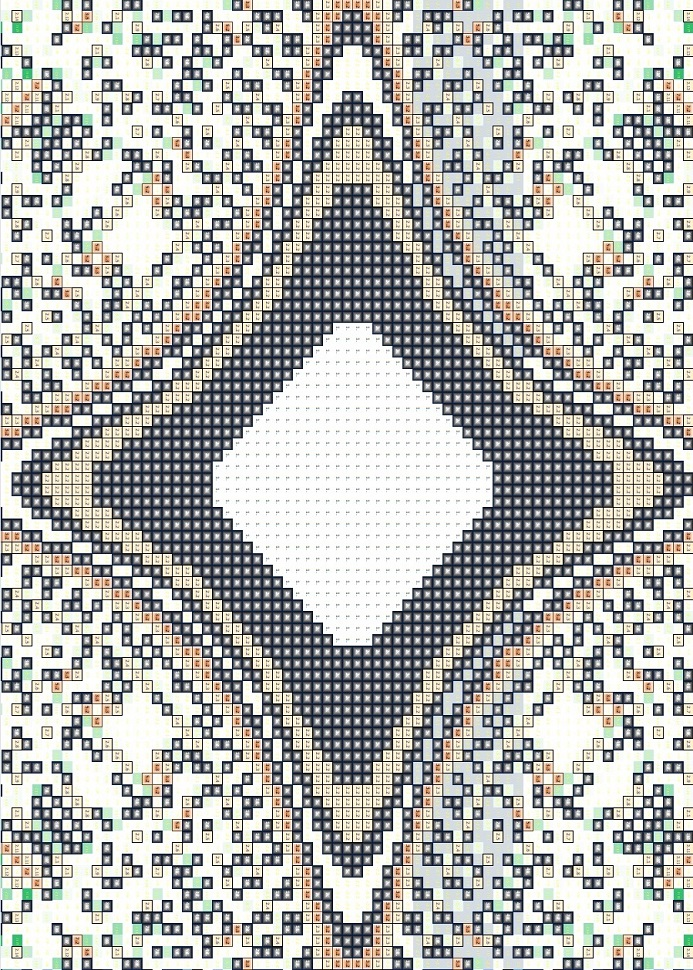

"Десять сфирот сокрытия – размер их десять таков, что нет им конца. Бездна начала и бездна конца, бездна добра и бездна зла, бездна возвышенности и бездна низменности, бездна Востока и бездна Запада, бездна Севера и бездна Юга – и Единый Хозяин, Творец, Верный Царь, Правящий всеми с Отделенного места Своего, вечно." Сефер Ецира, Авраам
"Oh how I wish for soothing rain,
All I wish is to dream again!!
My loving heart lost in the Dark
For Hope I'll give my everything..."
Nightwish[1]
"Когда я подумал, что достиг дна, снизу постучали." Станислав Ежи Лец
...МИР, ПЕРЕВЕРНУТЫЙ В КОЛОДЕЦ, КОТОРЫЙ НЕ ИМЕЕТ ДНА, и падая куда, надежда достичь его жива всегда.
Чтобы закончить этот опыт
Чуть раньше, чем позавчера,
Человек может шагнуть просто
Чуть в сторону, сбивая взгляд,
Со всеми, кто Ей зачарован
Быть продолжает: Бездной смыслов
Стремлений, Знаний, Настроений.
Возможностей Манящих Бездна.
Именно с этого МЫШЬ В КЛЕТКЕ[2]
СВОЙ БЕГ ПО КРУГУ начинает,
И здесь же, мыслью отказалась
Категорически быть дальше
Ловлей Кубического Шанса
Наполовину Настоящим
Уже не будущий Животным
Но еще и не Говорящий
От Сна в гробу освобождаясь
ЧЕЛОВЕК В БЕЗДНУ НА ПРОЩАНЬЕ
СЕРДЕЧНО, С ЧУВСТВОМ, с расстановкой,
ХАРКНЕТ, СЖИГАЯ ЗА СОБОЮ
МОСТЫ ВСЕХ ЛИЧНЫХ ОТНОШЕНИЙ
Сжигая навсегда, так, словно
ОН ДЛЯ ВСЕХ, КТО ЗНАЛ ЛИЧНО, УМЕР
Погиб бесславно, жертвой жизни
Став также, как и миллиарды
Таких же МИСТЕРОВ НИКТО
*/нрзб* НЕЗАЧЕМ, и слава Богу
Мученья прекратило в Нем.
ЗНАЮЩИЙ ТАЙНЫ УХМЫЛЬНЕТСЯ,
ЗАПЕЧАТЛЕВ ПЕЧАТЬЮ В СЕРДЦЕ
СВИДЕТЕЛЬСТВО, хоть и не просто
Будет кому-либо из смертных
ТАЙНОЮ ЭТОЙ ПОДЕЛИТЬСЯ
Убедить:
РАЗВЕ ЧТО ЕСЛИ БЫ ИМ БЫЛО,
И ОН БЫ ЯСНО ЭТО ВИДЕЛ,
ГЛУБОКО ИНТЕРЕСНО ЛИЧНО:
МНЕ ТУДА НАДОБНО И ВСЕ ТУТ.
Дано врачу право лечить.
Дано Творцу право Любить[3].
Лишь только Бездне не дано
Никаких прав, но лишь одно:
Паденье каждого сюда
Имеет Право быть без дна.
Не прекратится никогда.
Надежда здесь всегда жива,
"Стучится снизу" здесь она
Когда ты думаешь опять
Что ниже некуда упасть
И так рождается во Тьме
Подобный Световой волне
Который светит в глубине
Надеждой согревая тех,
Кто падает, не видя дна
Туда, где Ночь всегда Одна,
Без разницы в чем либо Ей,
Будь вокруг утро, вечер, день -
Поскольку Свет добыть из Тьмы
Возможно лишь Ее сгустив
Для тех, кто следом за тобой
Наивно верит, что идет,
Не понимая, что мираж
Он видит, думая, что шаг
К заветной Цели, за тобой
Дорогой близкой и прямой
Поскольку верный на Пути
Есть у него ориентир.
По кругу ходит он круги
Истаптывая сапоги,
Поскольку этот его труд
Тебе дает во Тьму взглянуть
И в непроглядной Бездне Тьмы
Сгустившейся вокруг него
И скрывшей на его Пути
Куда вновь падать будет днем
Когда надежды снизу стук
Еще не начал ласкать слух,
И кажется, что, большей Тьмы
Чем в этот миг, как ни ищи,
Хоть в недрах Бездны - только он:
Безмолвным знанием дано
Ему по Праву над собой,
Взамен отказа ждать Зари
Принять Реальность вечной Тьмы:
Правда и Ложь - в Ней миражи,
Несуществующие в Мире,
Но обретающие Силу
Судьбы, им данной в ощущеньях
Здесь и сейчас, лишь когда верит
В реальность их на Тьму идущий
Поскольку опытом научен
Ночами Бездны Тьмы кромешной,
Что глупцы, ждавшие рассвета
Растаяли бесследно в Бездне.
Взяла к Себе искавших смерти
Опасных "стражей" сумасшедших
Исчезнувших во Тьме бесследно
Вместе с шнурками от ботинок -
Так что следа от них нет в Бездне
Как будто Тьма их не носила.
Своим безжалостным примером
В сердцах оставшихся развеяв
Живые до сих пор сомненья
Что есть у Тьмы над человеком
Данное Ей каждою душою
Не захотевшей добровольно
Сделать себя марионеткой
Послушной Воле Силы Света
По факту этим над собою
Вручив власть Силе анонимной
Рассвету всем всегда противной
Поскольку создана "напротив"
Одно другому Ночью Темной
Когда господствовала Бездна
Над всей Реальностью, где Света
Еще быть не могло "в проекте"
Поскольку не было в Ней места,
Свободного от Тьмы Предвечной,
Чтобы там мог быть "пустой воздух"[4],
Основу жизни дать способный.
Окутав Бездну атмосферой.
Веществ цикличного обмена,
В котором Свет реченьем будет
Посредством Слова служить людям
В Конце Концов[5], когда повержен
Навеки будет Ангел Смерти...
...Настолько людям стать успевший
Проверенным надежным средством
Увековечить свою подлость,
Упертость, глупость, отделенность,
Ушей и глаз от неудобной
Им Правды, каждый век упорно
Возобновляющей по новой
Носиться по трущобам ветхим
Нижних миров со Своим Светом,
Который даром в них живущим
Из века в век не нужен людям -
Ведь каждый с малых лет к Свободе
Стремится сердцем и душою -
Привычка, ставшая натурой.
Когда-то Тьмой идея людям
Была подкинута "случайно".
И стала с этих пор триумфом
Масштабней всех, что Тьме бывало
Одерживать в битвах со Светом
Где жизнь людей всегда разменной
Служила игровой монетой...